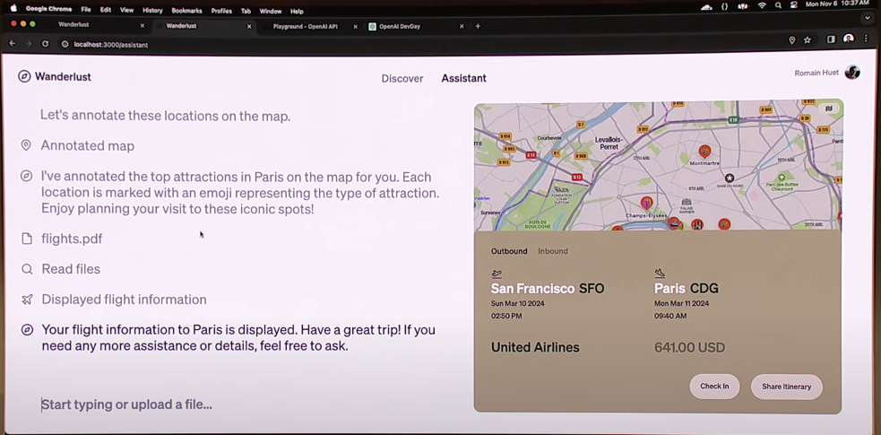
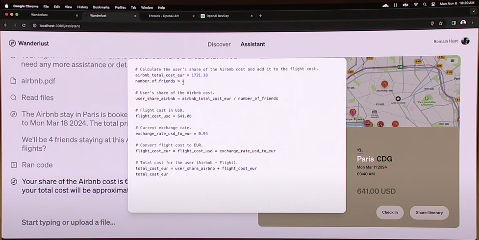

open AI 컨퍼런스 정리
얼마 전 open ai에서 개발자들을 대상으로 devday 행사가 열렸다. 이에 유튜브로 해당 내용들을 확인하고 정리해 보고자 한다.

이번 컨퍼런스의 핵심 내용은 gpts 서비스 제공인 것 같다. 앞서 발표자가 설명하는 gpt4 turbo의 변경사항들 모두 gpts 서비스 제공을 위한 개선 사항들이라고 할 수 있을 정도로 gpts 서비스 제공에 초점을 맞춘 업데이트라고 생각된다.
GPT4 turbo 업데이트 사항
수용 가능한 input의 크기 변화
→ 기존의 input 크기 토큰 8,000개에서 토큰 128,000개로 input의 수용 가능한 크기를 대폭 향상시켜 더 큰 데이터를 학습 시키고 질문할 수 있게 바뀌었다. 이는 300페이지 짜리 문서도 학습 시킬 수 있다는 것으로 논문이나 책, 보고서 등의 학습도 가능해졌다.
api 가격 절감
→ 기존 gpt4와 비교했을 때 input은 3배, output은 2배의 비용을 절감시켜 일반 개발자들이 더 싼 비용으로 gpt의 ai 서비스 호출이 가능해졌다.
JSON 형태로 output 지정 가능
→ JSON 형태로 호출 지정을 가능하게 해줘 서버 및 다른 api와의 연동 또한 사용하기 쉬워졌다.
DALL-E 3 모델 지원 및 text-음성 변환 기술 제공
→ 사진의 캡션을 생성하거나, 실제 이미지를 상세히 분석하고, 그림이 포함된 문서를 읽는 등의 작업이 가능해졌다. 여기서 핵심은 api에서 DELL-E 3를 사용 가능해 졌기 때문에 자신이 생성한 앱에 이 기능을 api형태로 추가 가능해 졌다는 것이다.
데이터 보안
→ OpenAI API에 전달된 데이터와 파일은 모델을 훈련하는 데 사용되지 않으며, 개발자는 적절하다고 판단될 때 데이터를 삭제할 수 있어 기업의 데이터 유출 문제를 해결할 수 있다. 또한 데이터에 민감한 기업에게는 custom models을 제공해 다른 고객에게 제공되거나 공유되지 않고 다른 모델을 훈련하는 데에도 사용되지 않는다.
GPTs 서비스


앞서 설명한 gpt4 turbo 모델을 이용해서 최종적으로 open ai에서 할 목표는 gpts 서비스 제공이다. 대부분의 LLM모델의 단점이 모든 도메인을 아우르는 LLM모델을 만들기 어렵다는 점이다. 특정 도메인 분야에서 더 정확한 모델을 얻기 위해서는 각 도메인의 데이터를 이용해 사전 학습하는 과정을 거쳐야 하고 gpt에서는 학습을 위해 긴 프롬프팅이 필요하다. 이번 open ai 컨퍼런스의 gpts는 이 문제를 해결할 것으로 보인다. 앞서 설명했던 input 크기 향상, 다양한 형태의 데이터 api 전송 가능, 가격 인하로 인해 더 많은 개발자들이 도메인 맞춤형 gpt를 생성할 수 있게 되었고 이를 서비스해 수익까지 창출할 수 있게 되었다. 기존의 app store의 형태처럼 AI 서비스 역시 맞춤형 gpt 모델을 제공하면서 일반 사용자들이 보다 더 쉽게 ai 서비스 접근이 가능해진 것이다. 또한 모델의 사전 학습 단계에서도 gpt를 사용해 학습이 가능하기 때문에 일반 사용자들도 데이터만 있다면 ai 개발자가 되어 자신만의 맞춤형 모델을 생성하고 서비스 가능해졌다. 실제로 open ai에서 시연했던 assistant api를 보면 이것이 구현 가능함을 보여줬다. 이로 인해 AI에 대한 일반인들의 접근성이 좋아져 더 활발한 AI 생태계 구축을 목표로 하는 것 같다.
GPTs를 보며 든 나의 생각
gpts를 보면서 나는 두 가지 사항을 생각해 보았다.
첫 번째로 산업의 개편이다. gpts가 상용화된다면 AI서비스를 개인 맞춤형으로 사용 가능해질 것이다. assistant api와 같은 서비스가 활성화된다면 기존의 AI모델을 사용 및 개발하기 위한 사전 지식의 역치가 많이 낮아질 것이다. 따라서 개발자나 컨설턴트 등의 직종이 심각하게 위협을 받을 것으로 예상된다.
두 번째로는 정보 보안이 더욱 중요해질 것으로 보인다. 컨퍼런스에서는 기업의 데이터를 학습하지 않는다고 했지만 이는 open ai에서 주장하는 바로 실제로 데이터를 학습하는지 여부는 알 수 없다. 삼성, KT과 같은 대기업들에서 gpt를 사용하지 않고 자체적인 LLM모델을 만들어 사용하려는 이유도 여기에 있다. 따라서 데이터를 암호화해서 학습시키고 결과를 도출해 내는 동형 암호와 같은 암호 기술들의 발전이 산업에서의 AI 활성화에 있어 필수 조건이라고 생각된다.